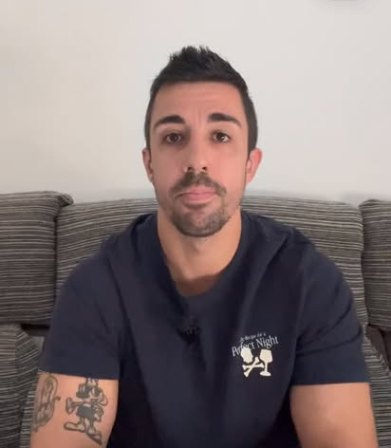

No tengo una hora libre
Trabajo, casa, horarios que cambian. Necesitas un plan que entre en tu semana real, no en la de un atleta profesional.
Poco tiempoOnline y presencial en Catarroja
Nutrición y entrenamiento, con una sola persona, para deportistas +25 que trabajan, tienen poco tiempo y quieren progresar sin vivir en el gimnasio.

Catarroja · OnlinePara quién es
No tengo una hora libre
Trabajo, casa, horarios que cambian. Necesitas un plan que entre en tu semana real, no en la de un atleta profesional.
Poco tiempoEl peso no cambia
Entrenas, comes "bien" y la báscula no se mueve. Hay que mirar más cosas que un número y ajustar con criterio.
EstancadoYa sé lo que tengo que hacer
Lo difícil es hacerlo cuando la vida aprieta. El problema no es tu fuerza de voluntad: es que nadie te ha dado un sistema que puedas sostener.
ConstanciaQuiero rendir, no solo verme bien
Fuerza, carrera, ciclismo, HYROX… Que lo que comes y cómo entrenas empujen en la misma dirección.
RendimientoLo que nadie te dice
Lo que suelo explicar en consulta y en mis reels, sin rodeos. Ciencia contada en llano.
Comer muy poco suele traer más hambre y un plan imposible de aguantar. Lo que funciona es lo que puedes mantener.
Una comida no cambia tu composición corporal. Lo que la cambia son las decisiones que tomas la mayoría de los días. Si al día siguiente vuelves a tu plan, has construido adherencia.
La motivación va y viene. Los sistemas permanecen. Por eso planificamos para tus peores semanas, no para las mejores.
El peso fluctúa por agua, digestión o entrenamiento. El peso no lo es todo: también miramos perímetros, rendimiento y cómo te encuentras.
Sesiones cortas y bien planificadas suman. Es mejor algo que puedas repetir cada semana que el entreno perfecto que nunca haces.
No necesitas detox. Necesitas hábitos que puedas sostener: comer suficiente, dormir, moverte y entrenar fuerza.
Información general y divulgativa. Cada caso se valora de forma individual. No sustituye la atención médica cuando hay una patología.
Mi método
No recibes una dieta y una rutina para que te las apañes. Recibes una estrategia, y alguien que la ajusta contigo cuando las cosas cambian.
Tus hábitos, horarios, alimentación, entrenamiento y lo que te ha impedido avanzar hasta ahora.
Nutrición y entrenamiento trabajando juntos, con una estrategia adaptada a tu objetivo y a tu vida.
Revisamos tu evolución, vemos qué funciona y ajustamos. Una planificación no debería acabar olvidada en una carpeta.
Al principio: hábitos que encajan en tu semana.
Por el camino: semanas buenas y semanas de caos. El caos también forma parte del proceso.
Siempre: ajustes con datos, no a ojo.
Servicios
Mismo método, dos formatos. Si no sabes cuál te encaja, empieza el formulario y lo vemos.
Para quien entrena (o quiere empezar) y necesita que dieta y entreno vayan de la mano, con seguimiento real.
Para quien prefiere verse cara a cara: pérdida de grasa, salud, rendimiento. Para gente de Catarroja y l'Horta Sud.
Si existe como programa cerrado, aquí iría el producto estrella: duración, para quién y qué incluye.


Mi historia
Dietista integrativo, preparador físico y deportista. Trabajo con lo que tú también tienes: poco tiempo y una vida real.
Desde 2018 me dedico a ayudar a personas que entrenan, o quieren empezar, a comer y entrenar con un plan que tenga sentido para su día a día. Llevo la nutrición y el entrenamiento juntos, porque separados se pisan.
[MI HISTORIA: resumir la destacada "Mi Historia" de Instagram — por qué empezó, su propio proceso, qué le llevó a trabajar así.]
Entreno y compito en HYROX, así que sé lo que es encajar entrenos entre el trabajo y todo lo demás. No somos perfectos, estamos aprendiendo y elegimos volver.
Formación: [TITULACIÓN DIETISTA] · [TITULACIÓN ENTRENADOR / PREPARADOR FÍSICO] · [Nº COLEGIADO si aplica]
Opiniones reales
Lo que comparto
Reels a cámara desde la consulta, estudios contados en llano y la vida real de entrenar con poco tiempo.
Preguntas frecuentes
Las dos modalidades siguen el mismo Método FS. La presencial es en mi consulta de Catarroja (Camí Real 63). La online funciona igual de bien si vives fuera o vas justo de tiempo.
[PRECIOS]. Depende de la modalidad y del seguimiento. Cuéntame tu caso en el formulario y te respondo con la opción que te encaja.
No es la idea. Comer demasiado poco suele traer más hambre y más abandono. El plan se adapta a tus gustos y a tu día a día para que puedas mantenerlo.
[CONFIRMAR: opciones sin gimnasio / en casa]. El entrenamiento se diseña según el tiempo y el material que tengas.
Es justo para quien trabaja y va justo. El plan parte de los días reales que puedes entrenar, aunque sean pocos.
Sí. Trabajo con gente que hace fuerza, carrera, ciclismo y deportes híbridos, y ajusto la nutrición y la planificación a tu deporte.
[PERIODICIDAD DE REVISIONES]. Entre revisiones puedes escribirme por WhatsApp para resolver dudas.
Cuéntamelo desde el principio. Valoraremos tu caso y, si hace falta, trabajaremos coordinados con tu médico.
Consulta presencial
Camí Real, 63
46470 Catarroja (Valencia)
[HORARIO]
Para toda España
46470 Catarroja (Valencia)
Cómo llegarEmpieza
Contesta cuatro preguntas (tardas un minuto) y me llega tu caso por WhatsApp. Te respondo yo.
No somos perfectos · Estamos aprendiendo · Elegimos volver